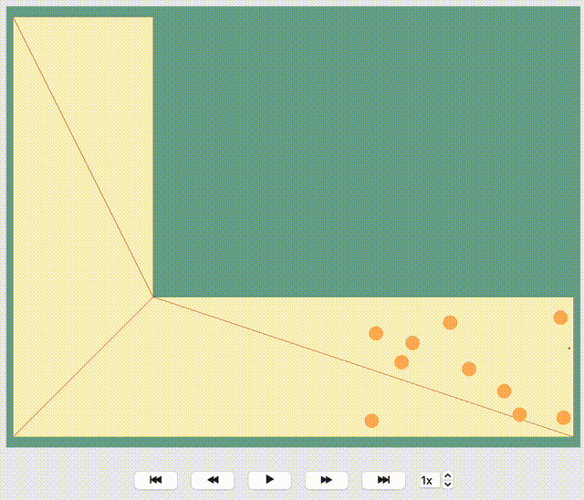

How to work with Journeys#
This notebook can be directly downloaded here to run it locally.
With JuPedSim, directing agents towards exits and ensuring a smooth evacuation from the simulation area is straightforward and versatile. There might be scenarios where it’s vital to navigate agents along various paths, thus creating diverse evacuation situations. Let’s explore different routing strategies of agents using a simple geometric space - a corner.
JuPedSim manages routing by geometrically triangulating the simulation area. Without user-defined routing strategies, agents, for example, in a corner simulation, naturally move towards the inner edge of the corner. Look at this visualization where the given direction of each agent is shown by a red line. You’ll observe all red lines lead towards the exit along the inner edge of the corner. While it seems logical, this path isn’t always optimal and could result in a bottleneck, thereby slowing down the evacuation process.

Show code cell source
import pathlib
import jupedsim as jps
import matplotlib.pyplot as plt
import numpy as np
import pedpy
from matplotlib.patches import Circle
from shapely import Polygon
%matplotlib inline
Preparing the Simulation: Geometry and Routing Instructions#
Let’s start by setting up a basic polygon. This will serve as our main simulation area where agents will be distributed. Additionally, we’ll mark an exit area using another polygon. When agents enter this exit area, they’re deemed to have safely evacuated and will be removed from the ongoing simulation.
Next, we’ll introduce an initial target for the agents: a sizable circular area (known as a switch). After the simulation kickstarts, agents will first head towards this circle. Once they enter the circle, they’ll be directed to one of three distinct waypoints, set diagonally along the curve of the corner.
For the simulation’s onset, all agents will be positioned inside a rectangular zone at the corner’s base.
simulation_polygon = Polygon(
[(-7, 15), (-7, -7), (23, -7), (23, 0), (0, 0), (0, 15)]
)
exit_polygon = [(-6.8, 14.8), (-0.2, 14.8), (-0.2, 13.5), (-6.8, 13.5)]
switch_point = (7, -3.5)
waypoints = [
(-0.5, -0.5),
(-3, -2),
(-6, -4),
]
distance_to_waypoints = 3
distance_to_switch = 3
distribution_polygon = Polygon(
[[22.8, -0.3], [10.8, -0.3], [10.8, -6.8], [22.8, -6.8]]
)
walkable_area = pedpy.WalkableArea(simulation_polygon)
Show code cell source
fig, ax = plt.subplots(nrows=1, ncols=1)
ax.set_aspect("equal")
pedpy.plot_walkable_area(walkable_area=walkable_area, axes=ax)
x, y = distribution_polygon.exterior.xy
plt.fill(x, y, alpha=0.1)
plt.plot(x, y, color="white")
centroid = distribution_polygon.centroid
plt.text(centroid.x, centroid.y, "Start", ha="center", va="center", fontsize=10)
x, y = Polygon(exit_polygon).exterior.xy
plt.fill(x, y, alpha=0.1)
plt.plot(x, y, color="white")
centroid = Polygon(exit_polygon).centroid
plt.text(centroid.x, centroid.y, "Exit", ha="center", va="center", fontsize=10)
ax.plot(switch_point[0], switch_point[1], "bo")
circle = Circle(
(switch_point[0], switch_point[1]),
distance_to_switch,
fc="blue",
ec="blue",
alpha=0.1,
)
ax.add_patch(circle)
ax.annotate(
"Switch",
(switch_point[0], switch_point[1]),
textcoords="offset points",
xytext=(-5, -15),
ha="center",
)
for idx, waypoint in enumerate(waypoints):
ax.plot(waypoint[0], waypoint[1], "ro")
ax.annotate(
f"WP {idx + 1}",
(waypoint[0], waypoint[1]),
textcoords="offset points",
xytext=(10, -15),
ha="center",
)
circle = Circle(
(waypoint[0], waypoint[1]),
distance_to_waypoints,
fc="red",
ec="red",
alpha=0.1,
)
ax.add_patch(circle)
num_agents = 100
positions = jps.distribute_by_number(
polygon=distribution_polygon,
number_of_agents=num_agents,
distance_to_agents=0.4,
seed=12,
distance_to_polygon=0.2,
)
Exploring Transition Strategies#
All agents initially set their course towards the switch_point. After reaching it, they navigate towards intermediate goals (waypoints) before making their way to the final exit. The challenge lies in deciding which waypoint each agent should target next.
Let’s explore three unique methods to determine these transition strategies:
Direct Path Strategy: Here, every agent simply aims for the first waypoint, mirroring a shortest path algorithm.
Balanced Load Strategy: Agents are directed towards the least occupied waypoint, ensuring a more balanced distribution.
Round Robin Strategy: Waypoints are sequentially assigned to agents, rotating through each in turn.
Direct Path Strategy#
def shortest_path(simulation: jps.Simulation, switch_id, waypoint_ids, exit_id):
"""Build a journey with fixed transitions for a given simulation."""
journey = jps.JourneyDescription([switch_id, *waypoint_ids, exit_id])
# switch ---> 1st waypoint
journey.set_transition_for_stage(
switch_id, jps.Transition.create_fixed_transition(waypoint_ids[0])
)
# 1st waypoint ---> exit
journey.set_transition_for_stage(
waypoint_ids[0], jps.Transition.create_fixed_transition(exit_id)
)
journey_id = simulation.add_journey(journey)
return journey_id
Balanced Load Strategy#
def least_targeted(
simulation: jps.Simulation, switch_id, waypoint_ids, exit_id
):
"""Build a journey with least targeted transitions for a given simulation."""
journey = jps.JourneyDescription([switch_id, *waypoint_ids, exit_id])
# switch ---> least targeted waypoint
journey.set_transition_for_stage(
switch_id,
jps.Transition.create_least_targeted_transition(waypoint_ids),
)
# from all waypoints ---> exit
for waypoint_id in waypoint_ids:
journey.set_transition_for_stage(
waypoint_id, jps.Transition.create_fixed_transition(exit_id)
)
journey_id = simulation.add_journey(journey)
return journey_id
Round Robin Strategy#
def round_robin(simulation: jps.Simulation, switch_id, waypoint_ids, exit_id):
"""Build a journey with least round-robin transitions for a given simulation."""
journey = jps.JourneyDescription([switch_id, *waypoint_ids, exit_id])
# switch ---> 1st waypoint with weight1
# switch ---> 2nd waypoint with weight2
# switch ---> 3th waypoint with weight3
weight1, weight2, weight3 = 1, 1, 1
journey.set_transition_for_stage(
switch_id,
jps.Transition.create_round_robin_transition(
[
(waypoint_ids[0], weight1),
(waypoint_ids[1], weight2),
(waypoint_ids[2], weight3),
]
),
)
# from all waypoints ---> exit
for waypoint_id in waypoint_ids:
journey.set_transition_for_stage(
waypoint_id, jps.Transition.create_fixed_transition(exit_id)
)
journey_id = simulation.add_journey(journey)
return journey_id
scenarios = [
shortest_path,
least_targeted,
round_robin,
]
Executing the Simulation#
With all components in place, we’re set to initiate the simulation. For this demonstration, the trajectories will be recorded in an sqlite database.
First we setup some agent parameters then run three simulation with the different strategies:
def run_scenario_simulation(scenario, agent_parameters, positions, geometry):
"""Runs a simulation for a given scenario using the provided simulation object, agent parameters, and positions."""
filename = f"{scenario.__name__}.sqlite"
simulation = jps.Simulation(
dt=0.05,
model=jps.CollisionFreeSpeedModel(
strength_neighbor_repulsion=2.6,
range_neighbor_repulsion=0.1,
range_geometry_repulsion=0.05,
),
geometry=geometry,
trajectory_writer=jps.SqliteTrajectoryWriter(
output_file=pathlib.Path(filename)
),
)
exit_id = simulation.add_exit_stage(exit_polygon)
switch_id = simulation.add_waypoint_stage(switch_point, distance_to_switch)
waypoint_ids = [
simulation.add_waypoint_stage(waypoint, distance_to_waypoints)
for waypoint in waypoints
]
agent_parameters.stage_id = switch_id
journey_id = scenario(simulation, switch_id, waypoint_ids, exit_id)
agent_parameters.journey_id = journey_id
for new_pos in positions:
agent_parameters.position = new_pos
simulation.add_agent(agent_parameters)
while simulation.agent_count() > 0:
simulation.iterate()
return filename, simulation.iteration_count()
for scenario in scenarios:
filename, iteration_count = run_scenario_simulation(
scenario,
jps.CollisionFreeSpeedModelAgentParameters(),
positions,
walkable_area.polygon,
)
Visualizing the Trajectories#
To visualize trajectories, we’ll pull simulation data from the SQLite database and then employ a helper function to depict the agent movements. For subsequent analyses, we’ll organize these trajectory files within a dictionary for easy access.
from jupedsim.internal.notebook_utils import animate, read_sqlite_file
agent_trajectories = {}
for scenario in scenarios:
scenario_name = scenario.__name__
agent_trajectories[scenario_name], walkable_area = read_sqlite_file(
f"{scenario_name}.sqlite"
)
animate(
agent_trajectories[scenario_name],
walkable_area,
title_note=f"Scenario: {scenario_name}",
every_nth_frame=10,
).show()
Analysis of the results#
With three distinct evacuation simulations completed, it’s time to dive into the outcomes. Let’s start by visualizing the trajectories. This will give us an initial insight into the variations among the scenarios:
fig, axes = plt.subplots(nrows=1, ncols=3, figsize=(15, 5))
for name, ax in zip(agent_trajectories, axes):
pedpy.plot_trajectories(
traj=agent_trajectories[name],
walkable_area=walkable_area,
axes=ax,
traj_width=0.2,
traj_color="blue",
)
x, y = Polygon(exit_polygon).exterior.xy
ax.fill(x, y, alpha=0.1, color="red")
ax.plot(x, y, color="white")
centroid = Polygon(exit_polygon).centroid
ax.text(
centroid.x, centroid.y, "Exit", ha="center", va="center", fontsize=10
)
ax.set_title(name)
Calculate profiles#
from typing import Tuple
import numpy.typing as npt
from scipy import stats
def calculate_density_average_classic(
bounds: Tuple[float, float, float, float],
dx: float,
nframes: int,
X: npt.NDArray[np.float64],
Y: npt.NDArray[np.float64],
) -> npt.NDArray[np.float64]:
"""Calculate classical method
Density = mean_time(N/A_i)
"""
geominX, geominY, geomaxX, geomaxY = bounds
xbins = np.arange(geominX, geomaxX + dx, dx)
ybins = np.arange(geominY, geomaxY + dx, dx)
area = dx * dx
ret = stats.binned_statistic_2d(
X,
Y,
None,
"count",
bins=[xbins, ybins],
)
return np.array(np.nan_to_num(ret.statistic.T)) / nframes / area
Show code cell source
from plotly.subplots import make_subplots
def plot_classical_density_profile(data, walkable_area, name, dx, rho_max):
geominX, geominY, geomaxX, geomaxY = walkable_area.bounds
title = f"<b>{name}</b>"
fig = make_subplots(rows=1, cols=1, subplot_titles=([title]))
xbins = np.arange(geominX, geomaxX + dx, dx)
ybins = np.arange(geominY, geomaxY + dx, dx)
x, y = walkable_area.polygon.exterior.xy
x = list(x)
y = list(y)
heatmap = go.Heatmap(
x=xbins,
y=ybins,
z=data,
zmin=0,
zmax=rho_max,
name=title,
connectgaps=False,
zsmooth=None,
hovertemplate="Density: %{z:.2f}<br>\nPos: (%{x:2f}: %{y:.2f}}",
colorbar=dict(title="Density"),
colorscale="Jet",
)
fig.add_trace(heatmap)
# Geometry walls
line = go.Scatter(
x=x,
y=y,
mode="lines",
name="wall",
showlegend=False,
line=dict(
width=3,
color="white",
),
)
fig.add_trace(line)
return fig
Show code cell source
import math
import plotly.graph_objects as go
dx = 0.5
rho_max = -1
fig = make_subplots(
rows=1, cols=3, subplot_titles=(list(agent_trajectories.keys()))
)
for count, name in enumerate(agent_trajectories):
trajectories = agent_trajectories[name]
data = calculate_density_average_classic(
walkable_area.bounds,
dx,
nframes=trajectories.data["frame"].max(),
X=trajectories.data["x"],
Y=trajectories.data["y"],
)
rho_max = max(np.max(data), rho_max)
ind_fig = plot_classical_density_profile(
data, walkable_area, name, dx, math.ceil(rho_max)
)
for trace in ind_fig.data:
fig.add_trace(trace, row=1, col=count + 1)
fig.update_xaxes(title_text="X [m]", row=1, col=count + 1)
fig.update_yaxes(title_text="Y [m]", scaleanchor="x", scaleratio=1)
fig
Analyzing Evacuation Duration#
To further understand our earlier observations, we compute the \(N−t\) diagram, which shows when an agent crosses a designated measurement line. We position this line near the exit and evaluate the \(N−t\) curves for all three simulations, subsequently determining the respective evacuation durations.
Note: It’s essential to position the measurement line inside the simulation area, ensuring that agents cross it.
import warnings
warnings.filterwarnings("ignore")
measurement_line = pedpy.MeasurementLine([[-3, 4], [0, 4]])
fig, ax = plt.subplots(nrows=1, ncols=1, figsize=(10, 10))
colors = ["blue", "red", "green"]
for i, name in enumerate(agent_trajectories):
nt, _ = pedpy.compute_n_t(
traj_data=agent_trajectories[name],
measurement_line=measurement_line,
)
ax = pedpy.plot_nt(nt=nt, color=colors[i])
ax.lines[-1].set_label(name)
Time = np.max(nt["time"])
print(
"Name: {:<20} Evacuation time: {:<15}".format(
name, "{} seconds".format(Time)
)
)
ax.legend()
plt.show()
Name: shortest_path Evacuation time: 88.4 seconds
Name: least_targeted Evacuation time: 65.0 seconds
Name: round_robin Evacuation time: 64.2 seconds
Findings and Conclusions#
The exploration of density profiles demonstrates notable variations in agent distribution, contingent upon the algorithm employed. The shortest path algorithm, aligning with our initial predictions, induces higher densities prior to encountering the corner. Conversely, the round-robin algorithm demonstrates a capacity to redistribute the jam, steering agents away from the corner bend and facilitating a more even spread around it.
A vital observation from the simulations underscores the role of waypoint placement, particularly when positioned as circles, along with the discernment of their range. This cruciality not only impacts agent navigation but also influences the effectiveness of the deployed algorithm.
Future Considerations#
As the waypoint placement proves to be instrumental, ensuing studies or simulations might delve into optimizing these placements, exploring a range of scenarios and algorithmic strategies to discern optimal configurations for various contexts. Furthermore, additional research could investigate the scalability of these findings, examining the consistency of agent distribution patterns in scenarios with varying agent quantities, environmental layouts, and navigational complexities.
Download#
This notebook can be directly downloaded here to run it locally.